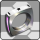
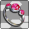
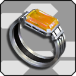
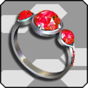
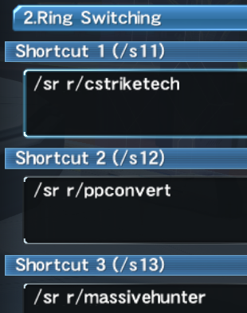
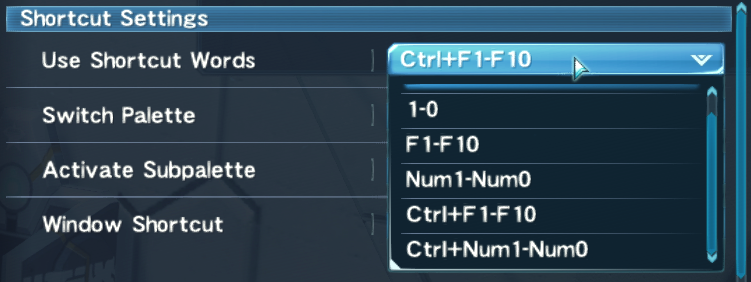

Note: Left rings can also be added to 12 or 13★ Units, allowing you to equip
up to 4 left rings at once.
L/Defense Tech / Defense Techniques (L)
Shortens the animation on your mirage step, and provides you with guard frames upon
charging a technique.
A shorter step escape allows you to more quickly dodge or reposition,
which is particularly useful for dodging without dropping your Synchro’s combo,
but also just useful for movement in general.
If you make only one left ring, make this one.
This ring's effect doesn't improve with grind level.
L/Jumping Dodge / Leaping Dodge (L)
Enables the Active Skill “Jumping Dodge” to be equipped to your Subpalette.
Activate to instantly gain altitude. During this jump, you are invincible. 5s cooldown.
Allows you to vertically reposition yourself to more easily lock
on to enemies, or enemy weak points that are high up. Can also be used before
Maron Strike to put distance between you and enemies, providing you more time to swap pets after Maron dies.
L/Mag Excite / Mag Excitement (L)
Increases the power of your mag's auto action and reduces its cooldown.
Summoner doesn't have any class rings that increase our damage, so instead, summoner can use this to gain damage.
Pairs well with the Megid auto action.

L/Near Auto Target / Nearby Auto Target (L)
Pet automatically normal attacks nearby enemies.
Sometimes this ring is helpful in mobbing quests, but most of the time it's terrible, awful,
and you shouldn't use it. While this ring is equipped, the following is true:
- Synchro, Vulcan, Maron, Melon, Rappy, Cery, and Popple will not perform their third normal attack
-
"But Rappy, Cery, and Popple don't have a normal attack chain", too bad, this ring breaks
every third normal attack on these pets anyway
- Wanda, Jinga, and Viola perform normal attack chains quicker
- Redran and Glass' third normal attacks won't occur, but only on their first normal attack chain after being summoned/recalled
- This game is garbage and nothing makes sense anymore
The easiest thing I can recommend is to not use this ring period. The vast majority of the
time it's detrimental, and in the case of Wanda, Jinga, and Viola, you can just manually auto attack after their third normal
to make their chains quicker.

R/C Strike Tech / Critical Strike: Technique (R)
Provides +3% crit damage and +20% crit chance.
This ring is crucial for hitting 100% critical hit rate on your pets, and as such, it's the right ring
you'll be using most of the time.
Cannot be equipped while using Fighter subclass. Grab this as soon as you switch to Phantom sub.

R/PP Convert / PP Conversion (R)
Enables the Active Skill “PP Convert" to be used on your subpalette.
For 20s, increase your natural PP regen from 5 PP/s to 7 PP/s and temporarily reduce your maximum HP by 30%.
PP Convert offers you another way to recover PP when Lightstream Canxion's effect is on cooldown. Switch to this ring during
downtime in combat, or if you find yourself low on PP! Remember to switch back to C Strike Tech afterwards.

R/Massive Hunter / Hunter Physique (R)
Allows you to equip "Massive Hunter" to your subpalette. For 25s, negate knockback
and take 10% less damage.
Similar in use to Zara Takt, but without requiring you to give up a Takt slot on your weapon palette. Swap to this if you find yourself
fighting enemies that frequently knock you down while Alter Ego is on cooldown.
In order to effectively make use of multiple right rings,
you’ll need to set up some simple shortcut words to do so.
You can access your shortcut words by hitting
Escape > System > Chat Settings.


Next, navigate to
System > Options > Control Settings > Assign Keys (Keyboard)
, and finally to
Shortcuts > Use Shortcut Words,
where you’ll be able to select from a few different
keybinds for utilizing shortcut words.
Pick whichever option is most comfortable for you, as you'll be using these binds frequently in combat.


Rings that grant you access to an active subpalette skill,
such as PP Convert and Massive Hunter,
will also need to be equipped to your subpalette in order to be used.